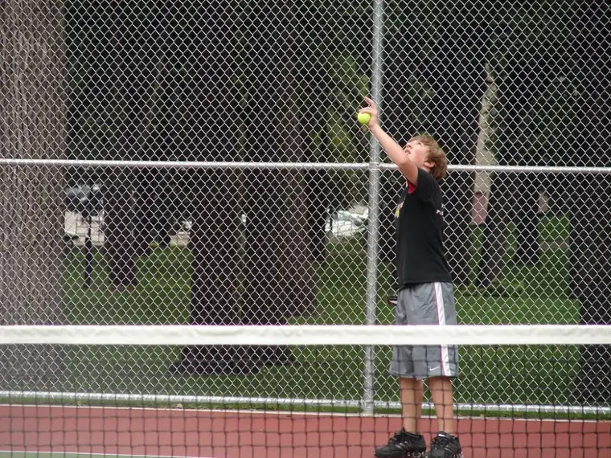
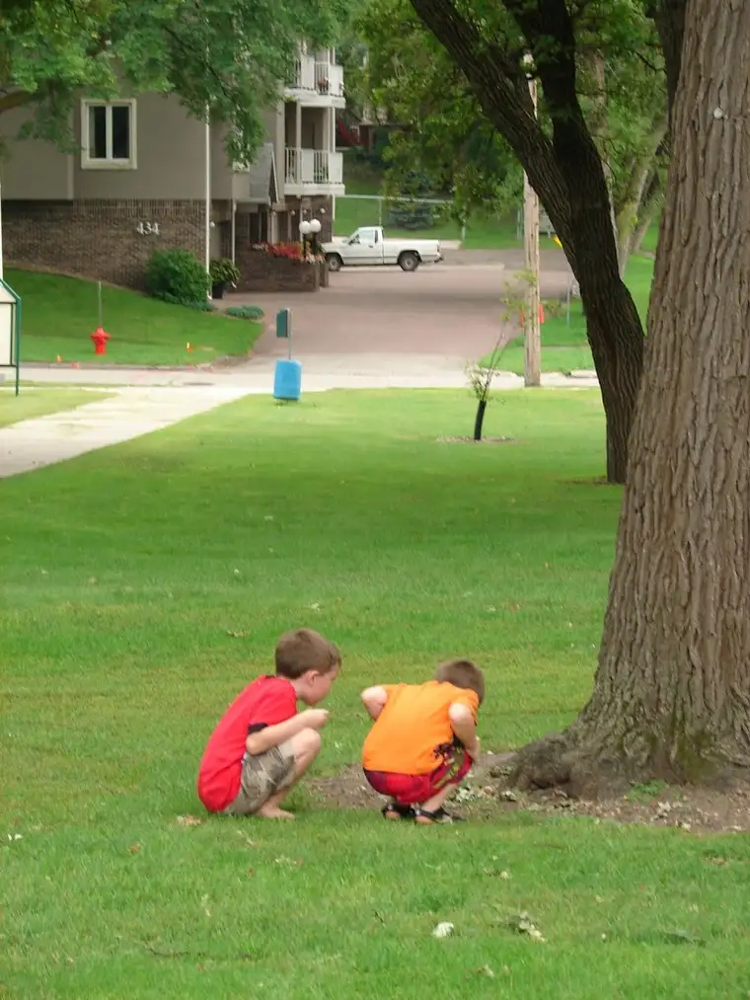
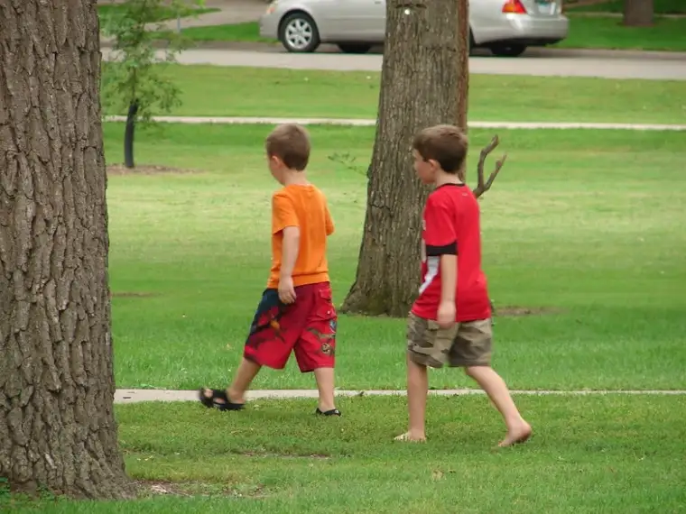

Happy Labor Day 2010!
Labor Day has always carried special meaning for me, having been born on Labor Day in 1968. Yes, my mother took the holiday very literally and labored through much of it, and because of that, my birthday typically lands around this day set aside to celebrate…labor, of all things.
Our priest wrote an interesting reflection about Labor Day in yesterday’s church bulletin. Fr. Paul’s contention is that the Labor Day holiday has lost its meaning in our part of the world. He referenced various passages in the Bible in which labor is mentioned, and noted how valuable labor is when put in its proper perspective.
“Through our labor we build things, take care of things, help them to grow and protect them,” he says, “…But there’s also a flip side that’s just as true: through our labor things are ‘done’ to us, too. Our labor affects us.”
Fr. Paul wrote that good, hard work makes a person better, and that one of the great causes of human deficiencies is when people become lazy and don’t work. “Work is one of those things that the Lord God knows can help to re-form us again in His image. And His image is one of love — and love can be both the cause and effect of our own labor in this life, if we make it so.”
I enjoyed thinking about labor in these terms, of stepping back to reconsider what labor is and how our work can bear great fruit — fruit that has eternal significance. I consider mothering and writing my two main areas of labor, and I love each, but neither are easy. Nevertheless, they do challenge me to be a better human being, even on the hard days. And they no doubt re-form me as well, just as Fr. Paul says.
Fr. Paul also mentions the need for recreation — another gift God gave us. I hope that your Labor Day, however you spend it, allows chances of replenishment so that when you return to whatever it is you labor over on a regular basis, you’ll have a greater appreciation for the labor rhythms of life; those things that, though only after much consternation some days, bring us closer to the One who created labor for us. Labor, after all, keeps our world humming and provides opportunities for us to better serve one another.
This Labor Day weekend has brought our family out onto the tennis courts, where we’ve been spending a lot of time recently. Our oldest has been playing both JV and varsity tennis for his school this season…
{kind=link}

Set to serve…{kind=link}
…while his little brothers enjoy their own sport at the park near the courts (photos courtesy of my friend and fellow tennis mother Kristi F.):
{kind=link}

The first clue: acorns!{kind=link}

Squirrel hunting begins…{kind=link}
Finally, a shout-out of love to my dear friend Mary A., who is celebrating her birthday today! If you can, do stop by Mary’s blog, Play off the Page, and wish her a happy birthday.
Q4U: How or when have you been transformed by labor?